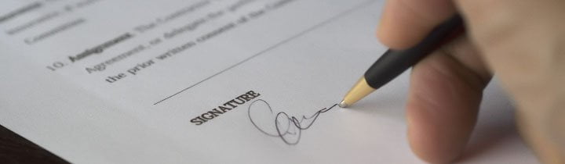
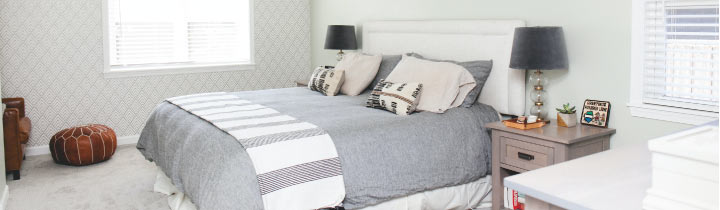

¿Cómo aplicar a la Working Holiday Francia para argentinos?
Ahora sí, les dejamos el paso a paso del proceso de solicitud de la Working Holiday Francia, para que al momento de obtener su turno sepan cuáles son los pasos a seguir.
Solicitud de turno
Para poder solicitar esta visa, deben obtener una cita en el Consulado de Francia en Buenos Aires. El turno es personal e individual, lo que significa que no puede ir otra persona que no sean ustedes y tampoco pueden ir con alguien más que también aplique.
Además, el turno se solicita exclusivamente por Internet. Tengan en cuenta que deben conservar su código personal.
Solicitar turno en el Consulado
Tengan en cuenta que si al ingresar al link para solicitar turno no les permite seleccionar una fecha es porque en ese momento no hay cupos.
Documentación a presentar
IMPORTANTE: Desde la Embajada solicitan que la documentación se presente en un orden determinado. Nuestro paso a paso está acorde a ese orden exacto, así que organicen su carpeta o expediente respetando esta lista.
Todos los documentos se deben presentar en original + fotocopia.
1. Pasaporte
Deben presentar su pasaporte argentino expedido hace menos de 10 años y válido hasta al menos tres meses después de la fecha finalización de su visa.
Además, el pasaporte debe tener al menos dos páginas en blanco. Presentan el original y una fotocopia de la página principal.
2. Formulario de aplicación

Tienen que presentar el formulario de solicitud de visa, completo con letra mayúscula. Pueden hacerlo a mano o en computadora.
Nosotros recomendamos llenarlo a mano, ya que si les queda alguna duda y no completan algunos puntos, pueden pedir asistencia en el Consulado el día de su cita y lo terminan allí.
3. Fotografías
Tienen que presentar dos fotos tipo carnet de 3.5 x 4.5 cm, en color y con fondo claro. Se solicita que las mismas estén acordes a las normas internacionales.
4. Carta de motivación
Otro requisito es presentar una carta de motivación manuscrita, puede ser en castellano o en francés. Deben explicar por qué están interesados en aplicar la Working Holiday Francia, y cómo piensan que este programa los podría ayudar en el futuro.
Por ejemplo, si van con la idea de perfeccionar el idioma y conocer una nueva cultura, pueden escribir algo referido a eso.
Tip 1: Halagar un poco el país, por ejemplo diciendo que les gusta la cultura francesa, su historia, etc.
Tip 2: También pueden agregar que esperan que la experiencia, el idioma y todo lo que aprendan durante el viaje les sirva para cuando regresen definitivamente a Argentina, así dan a entender que no quieren quedarse más tiempo en Francia.
Al final deben que indicar nombre y firma.
5. Certificado de antecedentes penales
Deben presentar un certificado de antecedentes penales que haya sido emitido, como máximo, 3 meses antes de su presentación en el Consulado.
El certificado NO debe estar apostillado ni certificado. Lo presentan tal cual como lo reciben. En el siguiente artículo les explicamos paso a paso cómo obtenerlo:
6. Seguro de viaje
Para poder postular a esta visa es necesario que tengan contratado un seguro de viaje que contemple lo siguiente:
- Vigencia: la duración del seguro debe ser por la totalidad de su visa, es decir, tiene que tener vigencia por un año. La fecha de inicio del mismo debe coincidir con el inicio de la visa.
- Cobertura: su póliza de seguro debe cubrir riesgos relativos a enfermedad, maternidad, invalidez y hospitalización por un monto mínimo de EUR 30.000.
7. Certificado médico
Deben presentar un certificado médico de buena salud que haya sido emitido por un hospital público o privado.
Si bien no está especificado, recomendamos que el certificado tenga una antigüedad máxima de 15 días.
8. Fecha estimada de viaje
El día de su cita deben indicar una fecha estimada de viaje, o presentar una reserva de pasaje de ida a Francia. Desde la Embajada de Francia en Buenos Aires recomiendan no tomar decisiones apresuradas tales como adquirir el pasaje de ida antes de obtener la visa aprobada.
Por lo tanto, el día de la cita no les van a solicitar que presenten un pasaje de ida. Solo una fecha estimada de viaje.
Por otro lado, para el día de la aplicación tampoco se solicita presentar pasaje de vuelta o fondos adicionales para cubrir ese gasto.
9. Reserva de alojamiento

No es necesario que presenten una reserva de alojamiento para los primeros días, pero en el punto 25 del formulario de pedido de visa de larga estadía deben indicar el domicilio en Francia donde se van a quedar los primeros días (calle, número, código postal y ciudad).
En el caso de que vayan a hospedarse en un hostel, hotel, Airbnb, etc., pueden indicar esa dirección.
10. Demostración de solvencia económica
Deben presentar comprobantes de solvencia económica de al menos EUR 2500 (USD 2,817) o su equivalente en otra moneda.
Indistintamente del comprobante que presenten, el mismo no debe tener más de 15 días de antigüedad considerando la fecha de la cita en el Consulado.
Para realizar la demostración, pueden presentar:
- Resumen de caja de ahorro y fotocopia de la tarjeta de débito internacional.
- Comprobante de plazo fijo.
Resumen de la caja de ahorro
Deben presentar un resumen de cuenta del banco, donde demuestren que en su caja de ahorro cuentan con al menos EUR 2500 (USD 2,817) o su equivalente en pesos, dólares o alguna otra divisa extranjera.
La caja de ahorro debe ser propia o pueden tener titularidad conjunta con padre o madre. También pueden presentar una fotocopia de su tarjeta (del plástico).
Plazo fijo
En su entidad bancaria deben solicitar una constancia de su plazo fijo y ese documento es el que tienen que presentar el día de la cita.
IMPORTANTE: Para que les tomen como válido el dinero del plazo fijo, éste debe finalizar antes de su fecha de viaje. Es decir, deben tener los fondos disponibles para el momento de viajar, sino no les va a servir.
Ejemplo: si viajan el 1 de julio, el plazo fijo debería vencer como máximo el 30 de junio o antes, así tienen acceso a los fondos.
Pueden ver más info sobre la demostración de solvencia económica en el artículo:
Cita en el Consulado
El día de su cita, deben asistir con toda la documentación listada en el horario que les asignaron. Tienen que presentarse en el Consulado Francés, ubicado en Basavilbaso 1253 (ver ubicación).
¿Cómo es la cita en el consulado?
En la cita solo tendrán que presentar los papeles, no es una entrevista. La atención es detrás de un vidrio y no dura más de 5 minutos.
IMPORTANTE: ese día van a tener que dejar su pasaporte en el Consulado para que les estampen la visa.
¿Cuándo me avisan si la visa esta aprobada?
Si el día de la cita presentan todo correctamente, en ese momento les avisan si su visa está aprobada o si deben corregir algo.
En el caso de que todo este correcto, las van a entregar una constancia impresa, que es la que tienen que llevar el día que van a retirar su pasaporte con la visa.
¿Tengo que ir personalmente a retirar la visa?
No es necesario. Tienen dos opciones:
- Que la retire una persona de su confianza. Debe ir con la constancia impresa que les dieron a ustedes el día de la cita.
- Que se la envíen por correo postal: si quieren hacerlo de esta forma, el día de la cita en el Consulado les explican cómo hacerlo. Nota: lleven efectivo para pagar por ese servicio.
¿Cuánto tiempo se demoran en entregar la visa?
El tiempo promedio es de 2 a 3 días, aunque se pueden llegar a demorar hasta 6 días. Esto es si presentan todo correctamente y no hay nada que corregir.
¿Puedo hacer un seguimiento del estado de mi visa?
Hay una forma de seguir el estado de la visa en la web de la Embajada de Francia. Tienen que indicar su número de trámite y fecha de nacimiento en el siguiente link: chequear estado de visa.
Hasta acá llegamos con toda la info sobre aplicar a la Working Holiday Francia! Si tienen alguna duda o algo para aportar, nos pueden dejar un comentario en esta pestaña